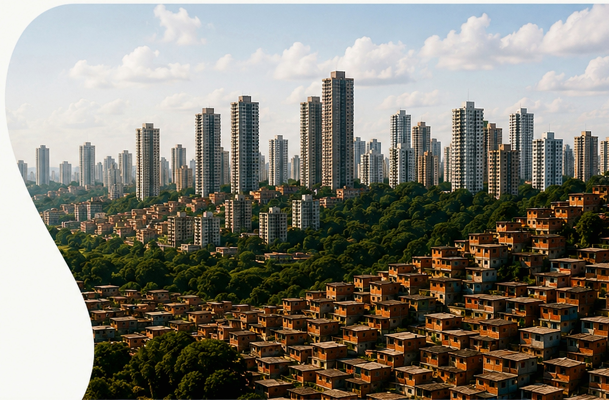

QUIZ · PENSAR A CIDADE
Teste seus conhecimentos sobre urbanização
Responda às perguntas e descubra quanto você entende sobre os desafios e soluções para cidades melhores e mais sustentáveis.

Uma cidade melhor começa com boas ideias.
Responda às perguntas e descubra quanto você entende sobre os desafios e soluções para cidades melhores e mais sustentáveis.
